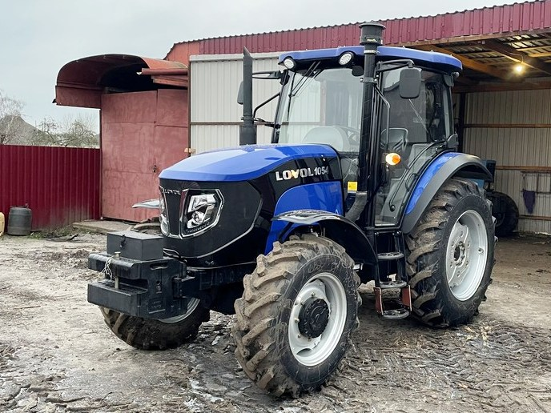

Foton-Lovol FT 1054

FT 1054 – це потужний універсально-просапний трактор, який є одним із лідерів у лінійці для середніх фермерських господарств. Трактор розрахований на виконання важких операцій: оранки 3-х або 4-корпусним плугом, дискування та посіву, а також активної роботи в транспортному режимі.
Модель вирізняється посиленою трансмісією з синхронізаторами та реверсом, що забезпечує 16 передач вперед і 8 назад. Повний привід із можливістю жорсткого блокування диференціала та значна власна вага трактора гарантують високе тягове зусилля. Кабіна третього покоління з рівною підлогою, панорамним склінням, кондиціонером та ергономічним сидінням Grammer забезпечує оператору комфорт європейського рівня. Система з двома паливними баками збільшеної місткості дозволяє працювати повну зміну без дозаправлення.
| Параметр | Значення |
|---|---|
| Клас тяги | 2.0 |
| Тип ходової частини | колісний |
| Колісна формула | 4х4 (повний привід) |
| Тип рами | напіврамна конструкція |
| Основне призначення | важкий обробіток ґрунту, посів, робота з комбінованими агрегатами, транспортні роботи з важкими причепами. |
| Параметр | Значення |
|---|---|
| Модель | Lovol-Perkins 1004C-P4TRT22 |
| Тип двигуна | чотиритактний дизель з турбонаддувом та інтеркулером |
| Спосіб охолодження | рідинне |
| Розташування циліндрів | рядне, вертикальне (4 циліндри) |
| Робочий об’єм | 4,0 – 4,3 л |
| Номінальна потужність | 77,2 кВт (105 к.с.) |
| Номінальні оберти | 2200 – 2300 об/хв |
| Система пуску | електростартер |
| Питома витрата палива | ≤ 230 г/кВт.год |
| Параметр | Значення |
|---|---|
| Муфта зчеплення | суха дводискова «LUK» (Німеччина), 12 дюймів |
| Тип КПП | механічна, синхронізована, з реверсом |
| Кількість передач | 16 вперед / 16 назад (з ходозменшувачем) |
| Кількість діапазонів | 4 (наднизький, низький, середній, високий) |
| Діапазон швидкостей (вперед) | 0,38 – 35,2 км/год |
| Вал відбору потності | задній незалежний, 540 і 1000 об/хв |
| Номер діапазону | Номер передачі | Теоретична швидкість, км/год | Передаточне число трансмісії | Тягове зусилля, кН |
|---|---|---|---|---|
| C (Ходозменшувач) | 1 — 4 | 0,38 — 1,90 | 1050,0 — 210,5 | 32,00* |
| L (Низький) | 1 | 2,45 | 163,2 | 30,50 |
| 2 | 3,30 | 121,2 | 26,40 | |
| 3 | 4,50 | 88,9 | 19,40 | |
| 4 | 6,10 | 65,6 | 14,30 | |
| M (Середній/Робочий) | 1 | 8,20 | 48,8 | 10,60 |
| 2 | 10,80 | 37,0 | 8,10 | |
| 3 | 14,20 | 28,2 | 6,10 | |
| 4 | 18,50 | 21,6 | 4,70 | |
| H (Високий) | 1 | 22,10 | 18,1 | 3,90 |
| 2 | 26,40 | 15,1 | 3,30 | |
| 3 | 30,80 | 12,9 | 2,80 | |
| 4 | 35,20 | 11,3 | 2,50 |
Технічні примітки:
Тяговий клас: Трактор відноситься до класу 2.0. Завдяки значній масі (понад 4 тонни) та потужному двигуну, максимальне тягове зусилля у 30,5 кН (3050 кгс) дозволяє ефективно використовувати 4-корпусні плуги та важкі дискові борони.
Ходозменшувач (C): Наявність наднизьких швидкостей (від 0,38 км/год) робить модель незамінною для специфічних робіт: висадка розсади, робота з фрезами на важких ґрунтах або використання лісових подрібнювачів.
Трансмісія Lovol: Використання синхронізованої коробки передач разом із 12-дюймовою муфтою LUK забезпечує плавне перемикання навіть під значним навантаженням.
Робочий діапазон (M): Для посіву та основного обробітку ґрунту найпродуктивнішими є швидкості 8,0 – 11,0 км/год. Високий запас крутного моменту двигуна Perkins дозволяє долати короткочасні перевантаження без перемикання на нижчу передачу.
Транспортний режим: На 4-й передачі високого діапазону швидкість сягає 35,2 км/год, що при наявності пневматичної системи гальм причепа дозволяє безпечно перевозити вантажі масою до 8–10 тонн.
| Параметр | Значення |
|---|---|
| Тип коліс | пневматичні шини з посиленим протектором |
| Марка шин (передні/задні) | 12.4-24 / 16.9-34 (або 13.6-24 / 18.4-34) |
| Радіус ведучого колеса | 0,82 м (заднє) |
| Кількість коліс | 4 |
| Ведучі мости | обидва (передній міст балочного типу DANA) |
| Режим роботи | Витрата |
|---|---|
| Під час роботи з навантаженням | 14,5 – 19,5 кг/год |
| Під час холостих переїздів | 5,5 – 8,0 кг/год |
| Під час зупинок (холостий хід) | 1,8 – 2,5 кг/год |
| Параметр | Значення |
|---|---|
| Маса експлуатаційна | 4150 – 4500 кг (з баластами) |
| Довжина / Ширина / Висота | 4500 / 2250 / 2950 мм |
| Дорожній просвіт | 430 – 480 мм |
| Об’єм паливного баку | 140 л |
| Параметр | Значення |
|---|---|
| Начіпний пристрій | задній гідравлічний 2-циліндровий, вантажопідйомність – 3200 кг |
| Гідросистема | продуктивність 45-55 л/хв, 3 пари гідровиходів |
| Кабіна | комфортабельна, з кондиціонером, вугільним фільтром та круговим оглядом |
| Передні баласти | встановлені (до 300 кг) |